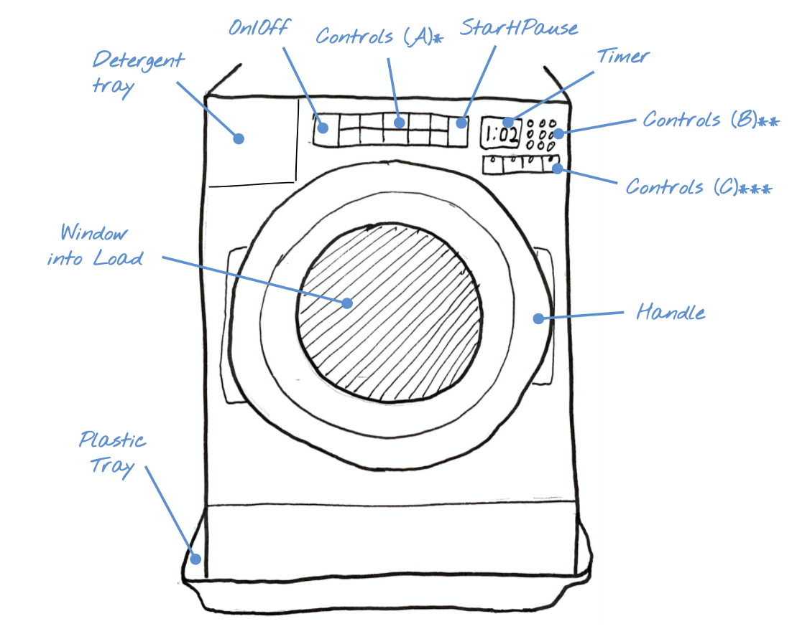
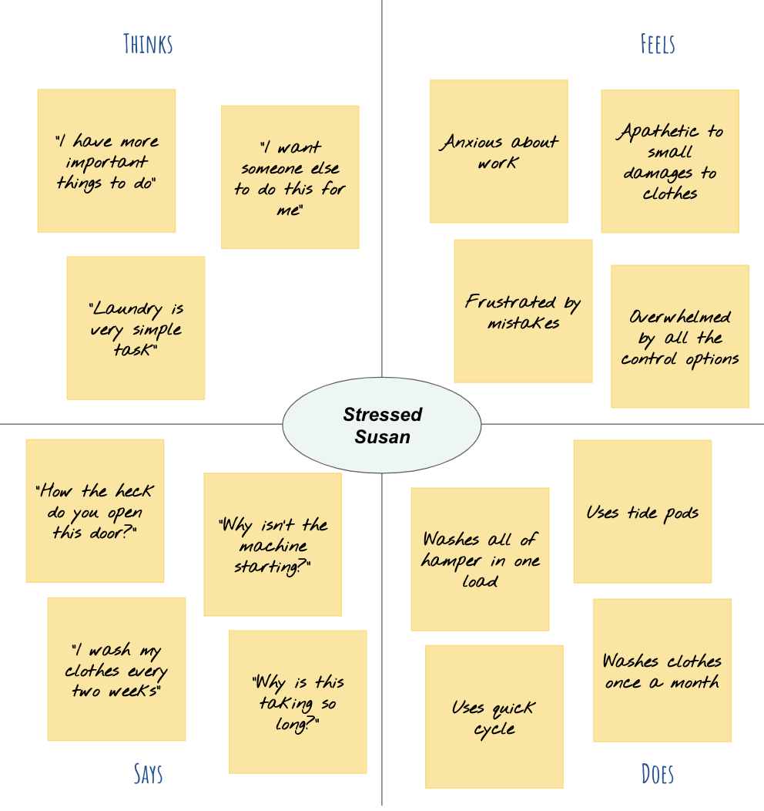
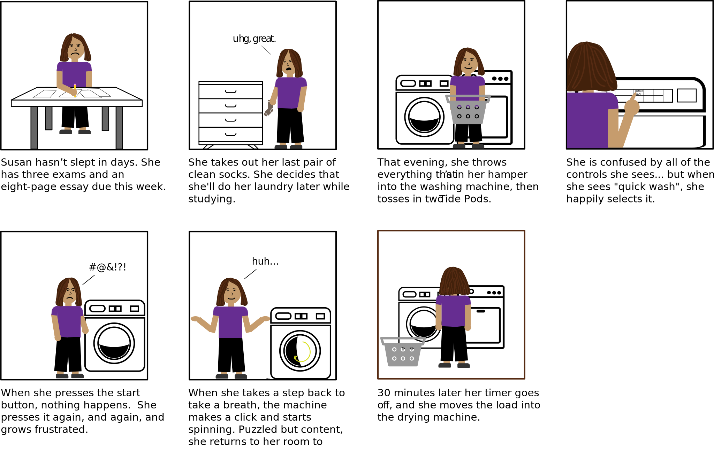

Are washing machines designed well for college students?
To answer this question, I studied the physical interface of a washing machine and observed three different college students using it. To understand more context around my observations, I surveyed each student about their experience and laundry habits. Finally, I created personas to summarize my findings and visualized one with a storyboard.
The Interface
The washing machine helps users keep their belongings looking and smelling clean by washing them in a quick, low-effort way, needing no supervision once a load has been started. This particular washing machine allows users to choose from simple categorical settings depending on the make-up of their load (Controls A), in addition to letting them fine-tune specific controls such as the spin speed (Controls B).

*Controls A: Top row contains options pertaining to what to wash (regular, delicates, bulky items, whites, colors, towels) and bottom row contains options for how to wash (normal, wrinkle control, heavy duty, sanitize, cold wash, quick wash).
**Controls B: Slider-like options for the temperature, spin seed, and soil level.
***Controls C: On/Off options for clean washer, drain & spin, steam clean, extra rinse, pre soak, and load & go.
Observations
I observed the three users (one at a time) using the same washing machine, starting from when they began preparing their loads until the cycle was finished. The partcipants knew I was observing them, but were told to behave as if I wasn't.
User A
College senior who does laundry weekly and has used this machine multiple times before.
Separated clothes from hamper into lights, darks, and undergarments, and put darks load into washer
Threw in two Tide Pods and left machine settings as default (regular/normal)
Held down the start button for 3 seconds (as directed on machine), then waited expectantly for 30 seconds as machine did nothing
Once machine made clicking sound and red lock popped up on screen, she walked away satisfied and did homework
Once the load finished, didn't notice for ~30 minutes, then moved the entire load to the dryer
User B
College senior who does laundry monthly and has never used this machine
Brought full hamper to washer and put each article of clothing into machine one-by-one, putting towels and one pair of shorts to the side
Put in one tide pod
Turned machine on then looked at controls for a while, thinking, then changed settings from default to "delicates"
Squinted at button and then held it down for three seconds and released
When nothing immediately happened, pressed and held the button again
For third time, held the button and waited. Once the machine clicked, waited more until the machine started to spin, then walked away to do homework
Once the load finished, didn't notice for 2 hours, then moved the entire load to the dryer
User C
College junior who does laundry every two weeks and has never used this machine
Separated hamper into whites and colors (it was all clothing), and put colors pile into washer
Stared at controls for 20 seconds, then turned machine on
Felt around edge of detergent tray door and pulled out the tray and filled it with liquid detergent
Pressed a few different controls before landing on “cold wash”
Pressed start button for 3 seconds (as directed on button)
Stared at it patiently; when machine started to spin (after the click sound and lock popped up on spring), he set a timer on phone for the amount of time remaining (as indicated on the machine)
When the timer went off, returned to machine and there were 5 minutes remaining
Waited for the load to finish, then removed clothes from machine and hung them on a personal drying rack in room
Interview Questions
Directly after each user finished their washing machine experience, I interviewed them about their experience using the same set of 12 questions. The questions and summaries of the users' answers are shown below.
How often do you use a washing machine?
User A washes her clothes weekly, User B monthly, and User C every two weeks.
When was the last time you did your laundry?
User A did her laundry about three weeks ago, User B about six weeks ago, and User C about two weeks ago.
On a scale of 1-10, how much do you like doing laundry (1 being you absolutely hate it, 10 being you look forward to it)?
Users A and C said they didn’t love doing laundry, but liked having clean clothes so rated their like-level at a 5. User B said she dreaded doing laundry and put it off as much as possible so rated herself as a 2.
Imagine your hamper is full of dirty laundry––including athletic wear, casual wear, dressy attire, undergarments, and towels, all of which have a diversity of colors. How would you separate out your loads?
User A said she would separate the hamper into lights, darks, and towels. User C said the same except the “lights” pile would be strictly white and gray clothing. User B said she would separate into clothes and towels.
For each load you said you would do, what settings on the washing machine would you use?
User A said she would use the default/normal setting for all three loads, but would turn the temperature one notch higher than the default for the towels load. User B said she would use the “delicate” setting for the clothing loads and the “towels” setting for the towel load. User C said he would use the “cold wash” setting for the clothing loads, and the default settings for the towels.
Why would you pick these settings?
User A said she didn't know what the pre-set controls (i.e. towels) would do so felt like normal was the safest. She makes the temperature higher for the towels because she’s not worried about them shrinking and thinks it will clean them better.
User B said that she wasn’t sure what "delicates" meant but figured it would ensure her clothes don't get damaged. She said the "towels" setting “seems fitting” for towels.
User C said he uses cold wash because he's afraid the washer will shrink his clothes and doesn't have enough clothes to risk damaging them. Like User A, he's not worried about towels so washes them with the normal settings.
Are there any circumstances where you would use different settings?
User A said she uses the "Quick Wash" setting when she is in a rush or stressed out about work. User B said she wasn't very tied to any particular setting so might play around with others. User C said he sticks with the same settings.
What type of detergent do you use? (i.e. liquid detergent, powder, tide pods)
Users A and B use tide pods; User C uses liquid detergent.
How do you dry your clothes once they are finished?
Users A and B put them directly into the dryer. User C chooses not to use the dryer and hang-dries them because he is worried about the dryer shrinking his clothes. For the towels load, he uses the dryer.
What (if anything) do you like about this washing machine?
All three users mentioned liking the convenience of having a washing machine directly in their apartment. User B also mentioned liking having presets for different types of loads (i.e. towels) so she doesn’t need to worry about the best settings to use for different loads.
What (if anything) frustrated or annoyed you about this washing machine?
Users A and C didn’t love the preset options (i.e. towels) because they didn’t know what they entailed. User B thought the start button was very frustrating because it didn’t provide immediate feedback. User C thought which side to open the door on was very unclear, since the two sides look the same.
If you could add a feature to this washing machine, what would it be?
User B suggested a more welcoming interface including encouraging messages to “make doing laundry more fun.“ User C would like a notification when his load is done since he sometimes forgets to set a timer and then forgets about it.
Personas
After I collecting data from these three users, I created two personas based off of my observations and interviews.
Careful Cary
Cary is a junior at Brown University who believes in a more minimalist lifestyle. He has a small collection of clothing which he rotates through, so any article of clothing getting ruined would go very noticed. He generally likes things to be clean and doesn’t mind spending extra time on something in order to do it right.
Cary is largely based off of User C who uses the cold wash settings and hang drys his clothes to prevent any damage or shrinking.
Empathy map for Careful Cary.
Stressed Susan
Susan is a senior at Brown University who has a lot on her plate: exams, papers, and job interviews. Work is her number one priority right now, and her stress level is making her highly irritable. She has a large collection of T-shirts and jeans which she mixes and matches for her outfits.
Susan is mostly based off of a combination of Users A and B. User A mentioned that when she is stressed out about work, she uses the quick wash because she feels pressed for time. User B was impatient and irritated when the machine didn't respond the way she expected it to. All three users worked on homework while waiting for their loads to finish, so Susan is an exaggeration of this.

Empathy map for Stressed Susan.
Storyboard
For the final step of the process, I flushed out one of the personas, Stressed Susan, even more by creating a storyboard for how she might do a load of laundry, never having used the particular machine before.

Storyboard of the laundry experience for the Stressed Susan persona.
Conclusions & Takeaways
After completing this project, I believe that this particular washing machine is very versatile to different college students' needs. While there are some basic design changes that would improve everyone's experiences––such as a more clearly labeled door, more accurate time estimates for how long the load will take, and more immediate feedback after you press start––overall, the different options in the controls allow for everyone to find something that they like. One interesting finding was that all three users expressed that they didn't understand what the pre-set controls (i.e. "towels") meant, but had different responses depending on how much they trusted the machine. A good next step would be to survey more users, better spanning different years at college (i.e. freshmen, sophomores, grad students). Due to COVID-19 quarantine restrictions, this was not possible at this time.